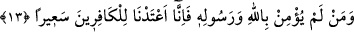
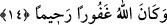

düşündünüz. Onların Medîne’ye, kendi âilelerine asla dönmeyeceklerini zannettiniz.
Zannın tekrar edilmesi, korkutma işlemini biraz daha şiddetlendirmek ve o kötülüğünü
tekrar tescil etmek içindir. Veya bir öncesinde açıklanan zanlarına atıftır ki, bu da bir
şeyin kendi üzerine atfedilmesi anlamına gelir. Yahut da o zanlarıyla beraber daha başka
bozuk zanlarına işâret etmektedir. Meselâ, Rasûlullah (s.a.)’ın gerçek bir Peygamber
olmadığını zannetmek gibi. Çünkü, Peygamberin peygamberliğine kesin olarak inanan
bir insanın aklına, o peygamberin yok edileceği gibi bir düşünce uğramaz. Bu şekilde,
burada zikredilen zannın daha genel bir anlam ifâde ettiğini düşündüğümüzde, aynı
şeyin tekrar edilmiş olması gibi bir pürüz mevzu bahis olmaz.
“Ve Allah katında helâk olan bir kavim oldunuz.” O’nun gadabını ve azâbını
hakettiniz, demektir. Veya “nefisleri bozuk, kalbleri bozuk ve niyetleri bozuk bir kavim
oldunuz, sizde hiç hayır yok” anlamındadır.
Talep yolunda çekilen sıkıntıdan şikâyet etme,
Bir kimse zahmet çekmeden rahata kavuşamaz.
Müfredât’ta mânâ: “Helâk olan bir kavim oldunuz” şeklindedir. Bu âyette şuna işâret
edilmektedir: Her kim, savaşta öleceğini, yaralanacağını veya başına kötülükler
geleceğini zannederek savaşa katılmayıp savaştan geri kalırsa, o kimse helâk olmuş
demektir. Şeytan o kişinin kalbinde geri kalmayı güzel göstermiştir. Şehidler için âhiret
hayatında, cennette yüce makamlar ve Allah’a yakınlık gibi nimetler hazırlanmıştır.
13. Kim Allah’a ve Rasûlüne îmân etmezse bilsin ki biz, kâfirler için çılgın bir
ateş hazırlamışızdır.
Bu geri bırakılanlar gibi kim Allah’a ve Rasûlüne îmân etmezse, hiç şühesiz biz
kâfirler için çetin bir azab hazırladık. Burada “onlar için” ifâdesi değil de, “kafirler
için” ifâdesinin kullanılması, îmân noktasından Allah ile Peygamberinin arasını
ayırarak, birine inanıp diğerine inanmamanın küfür olduğuna işâret etmek içindir. Artık
kâfir olunca da alevli bir ateşi haketmiştir.
14. Göklerin ve yerin mülkü Allah’ındır. O, dilediğini bağışlar, dilediğine ceza